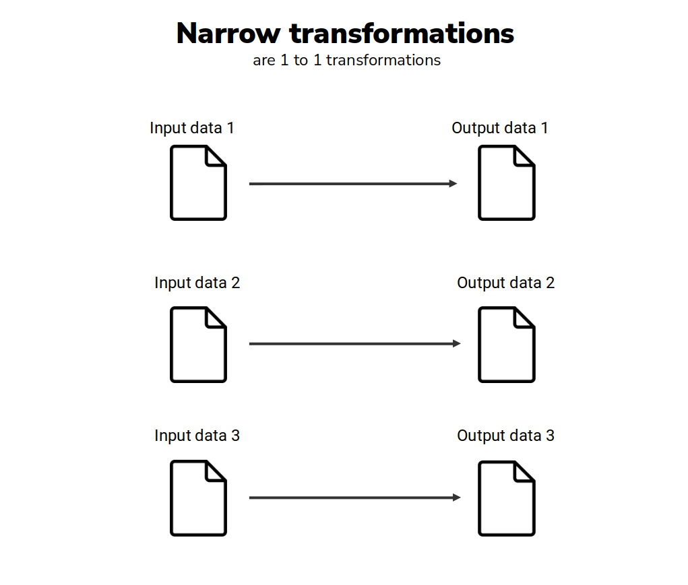
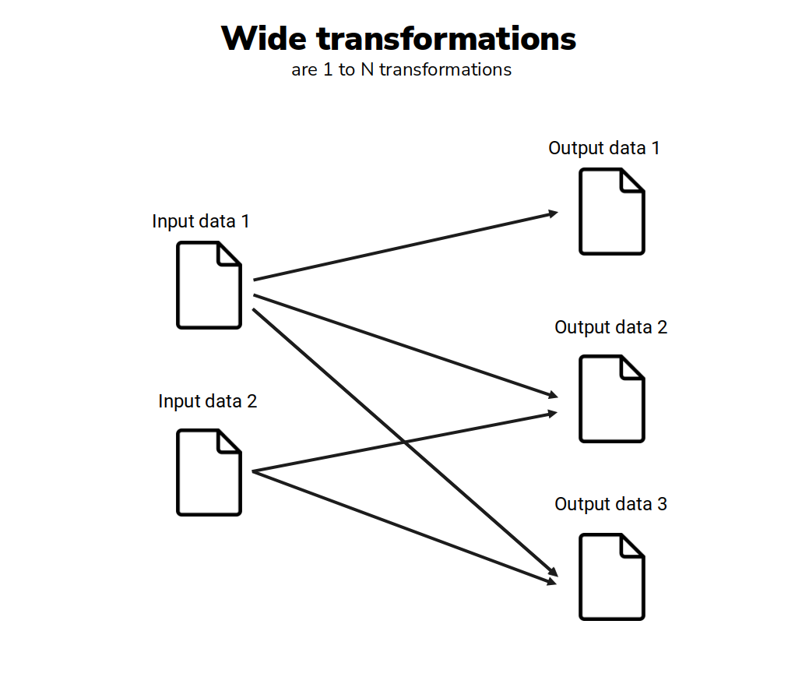

from pyspark.sql import SparkSession
spark = SparkSession.builder.getOrCreate()
from datetime import date
from pyspark.sql import Row
data = [
Row(id = 1, value = 28.3, date = date(2021,1,1)),
Row(id = 2, value = 15.8, date = date(2021,1,1)),
Row(id = 3, value = 20.1, date = date(2021,1,2)),
Row(id = 4, value = 12.6, date = date(2021,1,3))
]
df = spark.createDataFrame(data)5 Transforming your Spark DataFrame
5.1 Introduction
Virtually every data analysis or data pipeline will include some ETL (Extract, Transform, Load) process, and the T is an essential part of it. Because, you almost never have an input data, or a initial DataFrame that perfectly fits your needs.
This means that you always have to transform the initial data that you have, to a specific format that you can use in your analysis. In this chapter, you will learn how to apply some of these basic transformations to your Spark DataFrame.
5.2 Defining transformations
Spark DataFrames are immutable, meaning that, they cannot be directly changed. But you can use an existing DataFrame to create a new one, based on a set of transformations. In other words, you define a new DataFrame as a transformed version of an older DataFrame.
Basically every pyspark program that you write will have such transformations. Spark support many types of transformations, however, in this chapter, we will focus on four basic transformations that you can apply to a DataFrame:
- Filtering rows;
- Sorting rows;
- Adding or deleting columns;
- Calculating aggregates;
Therefore, when you apply one of the above transformations to an existing DataFrame, you will get a new DataFrame as a result. You usually combine multiple transformations together to get your desired result. As a first example, lets get back to the df DataFrame:
In the example below, to create a new DataFrame called big_values, we begin with the df DataFrame, then, we filter its rows where value is greater than 15, then, we select date and value columns, then, we sort the rows based on the value column. So, this set of sequential transformations (filter it, then, select it, then, order it, …) defines what this new big_values DataFrame is.
from pyspark.sql.functions import col
# You define a chain of transformations to
# create a new DataFrame
big_values = df\
.filter(col('value') > 15)\
.select('date', 'value')\
.orderBy('value')Thus, to apply a transformation to an existing DataFrame, we use DataFrame methods such as select(), filter(), orderBy() and many others. Remember, these are methods from the python class that defines Spark DataFrame’s (i.e. the pyspark.sql.dataframe.DataFrame class).
This means that you can apply these transformations only to Spark DataFrames, and no other kind of python object. For example, if you try to use the orderBy() method in a standard python string (i.e. an object of class str), you will get an AttributeError error. Because this class of object in python, does not have a orderBy() method:
s = "A python string"
s.orderBy('value')Traceback (most recent call last):
File "<stdin>", line 1, in <module>
AttributeError: 'str' object has no attribute 'orderBy'Each one of these DataFrame methods create a lazily evaluated transformation. Once again, we see the lazy aspect of Spark doing its work here. All these transformation methods are lazily evaluated, meaning that, Spark will only check if they make sense with the initial DataFrame that you have. Spark will not actually perform these transformations on your initial DataFrame, not untill you trigger these transformations with an action.
5.3 Triggering calculations with actions
Therefore, Spark will avoid performing any heavy calculation until such calculation is really needed. But how or when Spark will face this decision? When it encounters an action. An action is the tool you have to trigger Spark to actually perform the transformations you have defined.
An action instructs Spark to compute the result from a series of transformations. (Chambers and Zaharia 2018).
There are four kinds of actions in Spark:
- Showing an output in the console;
- Writing data to some file or data source;
- Collecting data from a Spark DataFrame to native objects in python (or Java, Scala, R, etc.);
- Counting the number of rows in a Spark DataFrame;
You already know the first type of action, because we used it before with the show() method. This show() method is an action by itself, because you are asking Spark to show some output to you. So we can make Spark to actually calculate the transformations that defines the big_values DataFrame, by asking Spark to show this DataFrame to us.
big_values.show()[Stage 0:> (0 + 12) / 12]+----------+-----+
| date|value|
+----------+-----+
|2021-01-01| 15.8|
|2021-01-02| 20.1|
|2021-01-01| 28.3|
+----------+-----+
Another very useful action is the count() method, that gives you the number of rows in a DataFrame. To be able to count the number of rows in a DataFrame, Spark needs to access this DataFrame in the first place. That is why this count() method behaves as an action. Spark will perform the transformations that defines big_values to access the actual rows of this DataFrame and count them.
big_values.count()3Furthermore, sometimes, you want to collect the data of a Spark DataFrame to use it inside python. In other words, sometimes you need to do some work that Spark cannot do by itself. To do so, you collect part of the data that is being generated by Spark, and store it inside a normal python object to use it in a standard python program.
That is what the collect() method do. It transfers all the data of your Spark DataFrame into a standard python list that you can easily access with python. More specifically, you get a python list full of Row() values:
data = big_values.collect()
print(data)[Row(date=datetime.date(2021, 1, 1), value=15.8), Row(date=datetime.date(2021, 1, 2), value=20.1), Row(date=datetime.date(2021, 1, 1), value=28.3)]The take() method is very similar to collect(). But you usually apply take() when you need to collect just a small section of your DataFrame (and not the entire thing), like the first n rows.
n = 1
first_row = big_values.take(n)
print(first_row)[Row(date=datetime.date(2021, 1, 1), value=15.8)]The last action would be the write() method, but we will explain this method latter, in the Chapter 6.
5.4 Understanding narrow and wide transformations
There are two kinds of transformations in Spark: narrow and wide transformations. Remember, a Spark DataFrame is divided into many small parts (called partitions), and, these parts are spread across the cluster. The basic difference between narrow and wide transformations, is if the transformation forces Spark to read data from multiple partitions to generate a single part of the result of that transformation, or not.
More technically, narrow transformations are simply transformations where 1 input data (or 1 partition of the input DataFrame) contributes to only 1 partition of the output.

In other words, each partition of your input DataFrame will be used (separately) to generate one individual part of the result of your transformation. As another perspective, you can understand narrow transformations as those where Spark does not need to read the entire input DataFrame to generate a single and small piece of your result.
A classic example of narrow transformation is a filter. For example, suppose you have three students (Anne, Carls and Mike), and that each one has a bag full of blue, orange and red balls mixed. Now, suppose you asked them to collect all the red balls of these bags, and combined them in a single bag.
To do this task, Mike does not need to know what balls are inside of the bag of Carls or Anne. He just need to collect the red balls that are solely on his bag. At the end of the task, each student will have a part of the end result (that is, all the red balls that were in his own bag), and they just need to combine all these parts to get the total result.
The same thing applies to filters in Spark DataFrames. When you filter all the rows where the column state is equal to "Alaska", Spark will filter all the rows in each partition separately, and then, will combine all the outputs to get the final result.
In contrast, wide transformations are the opposite of that. In wide transformations, Spark needs to use more than 1 partition of the input DataFrame to generate a small piece of the result.

When this kind of transformation happens, each worker node of the cluster needs to share his partition with the others. In other words, what happens is a partition shuffle. Each worker node sends his partition to the others, so they can have access to it, while performing their assigned tasks.
Partition shuffles are a very popular topic in Apache Spark, because they can be a serious source of inefficiency in your Spark application (Chambers and Zaharia 2018). In more details, when these shuffles happens, Spark needs to write data back to the hard disk of the computer, and this is not a very fast operation. It does not mean that wide transformations are bad or slow, just that the shuffles they are producing can be a problem.
A classic example of wide operation is a grouped aggregation. For example, lets suppose we had a DataFrame with the daily sales of multiple stores spread across the country, and, we wanted to calculate the total sales per city/region. To calculate the total sales of a specific city, like São Paulo, Spark would need to find all the rows that corresponds to this city, before adding the values, and these rows can be spread across multiple partitions of the cluster.
5.5 Filtering rows of your DataFrame
To filter specific rows of a DataFrame, pyspark offers two equivalent DataFrame methods called where() and filter(). In other words, they both do the same thing, and work in the same way. These methods receives a logical expression that translates what you want to filter as input.
To demonstrate some of the next examples in this chapter, we will use a different DataFrame called transf. With the code below, you can import the data from transf.csv to recreate this DataFrame in your Spark Session. Remember that, this CSV file is freely available to download at the repository of this book1.
from pyspark.sql.types import StructType, StructField
from pyspark.sql.types import DoubleType, StringType
from pyspark.sql.types import LongType, TimestampType, DateType
path = "../Data/transf.csv"
schema = StructType([
StructField('dateTransfer', DateType(), False),
StructField('datetimeTransfer', TimestampType(), False),
StructField('clientNumber', LongType(), False),
StructField('transferValue', DoubleType(), False),
StructField('transferCurrency', StringType(), False),
StructField('transferID', LongType(), False),
StructField('transferLog', StringType(), False),
StructField('destinationBankNumber', LongType(), False),
StructField('destinationBankBranch', LongType(), False),
StructField('destinationBankAccount', StringType(), False)
])
transf = spark.read\
.csv(path, schema = schema, sep = ";", header = True)This transf DataFrame contains bank transfer records from a fictitious bank. Before I show you the actual data of this DataFrame, is useful to give you a quick description of each column that it contains:
dateTransfer: the date when the transfer occurred;datetimeTransfer: the date and time when the transfer occurred;clientNumberthe unique number that identifies a client of the bank;transferValue: the nominal value that was transferred;transferCurrency: the currency of the nominal value transferred;transferID: an unique ID for the transfer;transferLog: store any error message that may have appeared during the execution of the transfer;destinationBankNumber: the transfer destination bank number;destinationBankBranch: the transfer destination branch number;destinationBankAccount: the transfer destination account number;
Now, to see the actual data of this DataFrame, we can use the show() action as usual.
transf.show(5)+------------+-------------------+------------+-------------+----------------+----------+-----------+---------------------+---------------------+----------------------+
|dateTransfer| datetimeTransfer|clientNumber|transferValue|transferCurrency|transferID|transferLog|destinationBankNumber|destinationBankBranch|destinationBankAccount|
+------------+-------------------+------------+-------------+----------------+----------+-----------+---------------------+---------------------+----------------------+
| 2022-12-31|2022-12-31 14:00:24| 5516| 7794.31| zing ƒ| 20223563| null| 33| 4078| 72424-2|
| 2022-12-31|2022-12-31 10:32:07| 4965| 7919.0| zing ƒ| 20223562| null| 421| 1979| 36441-5|
| 2022-12-31|2022-12-31 07:37:02| 4608| 5603.0| dollar $| 20223561| null| 666| 4425| 41323-1|
| 2022-12-31|2022-12-31 07:35:05| 1121| 4365.22| dollar $| 20223560| null| 666| 2400| 74120-4|
| 2022-12-31|2022-12-31 02:53:44| 1121| 4620.0| dollar $| 20223559| null| 421| 1100| 39830-0|
+------------+-------------------+------------+-------------+----------------+----------+-----------+---------------------+---------------------+----------------------+
only showing top 5 rows
As a first example, lets suppose you wanted to inspect all the rows where transferValue is less than 1000. To do so, you can use the following code:
transf\
.filter("transferValue < 1000")\
.show(5)+------------+-------------------+------------+-------------+----------------+----------+-----------+---------------------+---------------------+----------------------+
|dateTransfer| datetimeTransfer|clientNumber|transferValue|transferCurrency|transferID|transferLog|destinationBankNumber|destinationBankBranch|destinationBankAccount|
+------------+-------------------+------------+-------------+----------------+----------+-----------+---------------------+---------------------+----------------------+
| 2022-12-18|2022-12-18 08:45:30| 1297| 142.66| dollar $| 20223467| null| 421| 5420| 43088-1|
| 2022-12-13|2022-12-13 20:44:23| 5516| 992.15| dollar $| 20223442| null| 33| 5420| 41609-8|
| 2022-11-24|2022-11-24 20:01:39| 1945| 174.64| dollar $| 20223319| null| 421| 2400| 34025-8|
| 2022-11-07|2022-11-07 16:35:57| 4862| 570.69| dollar $| 20223212| null| 290| 5420| 51165-3|
| 2022-11-04|2022-11-04 20:00:34| 1297| 854.0| dollar $| 20223194| null| 421| 4078| 43478-6|
+------------+-------------------+------------+-------------+----------------+----------+-----------+---------------------+---------------------+----------------------+
only showing top 5 rows
Writing simple SQL logical expression inside a string is the most easy and “clean” way to create a filter expression in pyspark. However, you could write the same exact expression in a more “pythonic” way, using the col() function from pyspark.sql.functions.
from pyspark.sql.functions import col
transf\
.filter(col("transferValue") < 1000)\
.show(5)+------------+-------------------+------------+-------------+----------------+----------+-----------+---------------------+---------------------+----------------------+
|dateTransfer| datetimeTransfer|clientNumber|transferValue|transferCurrency|transferID|transferLog|destinationBankNumber|destinationBankBranch|destinationBankAccount|
+------------+-------------------+------------+-------------+----------------+----------+-----------+---------------------+---------------------+----------------------+
| 2022-12-18|2022-12-18 08:45:30| 1297| 142.66| dollar $| 20223467| null| 421| 5420| 43088-1|
| 2022-12-13|2022-12-13 20:44:23| 5516| 992.15| dollar $| 20223442| null| 33| 5420| 41609-8|
| 2022-11-24|2022-11-24 20:01:39| 1945| 174.64| dollar $| 20223319| null| 421| 2400| 34025-8|
| 2022-11-07|2022-11-07 16:35:57| 4862| 570.69| dollar $| 20223212| null| 290| 5420| 51165-3|
| 2022-11-04|2022-11-04 20:00:34| 1297| 854.0| dollar $| 20223194| null| 421| 4078| 43478-6|
+------------+-------------------+------------+-------------+----------------+----------+-----------+---------------------+---------------------+----------------------+
only showing top 5 rows
You still have a more verbose alternative, that does not require the col() function. With this method, you refer to the specific column using the dot operator (.), like in the example below:
# This will give you the exact
# same result of the examples above
transf\
.filter(transf.transferValue < 1000)5.5.1 Logical operators available
As we saw in the previous section, there are two ways to write logical expressions in pyspark: write SQL logical expressions inside a string; or, write python logical expressions using the col() function.
If you choose to write the SQL logical expressions in a string, you need to use the logical operators of SQL in your expression (not the logical operators of python). In the other hand, if you choose to write in the “python” way, then, you need to use the logical operators of python.
The logical operators of SQL are described in the table below:
| Operator | Example of expression | Meaning of the expression |
|---|---|---|
| < | x < y |
is x less than y? |
| > | x > y |
is x greater than y? |
| <= | x <= y |
is x less than or equal to y? |
| >= | x >= y |
is x greater than or equal to y? |
| == | x == y |
is x equal to y? |
| != | x != y |
is x not equal to y? |
| in | x in y |
is x one of the values listed in y? |
| and | x and y |
both logical expressions x and y are true? |
| or | x or y |
at least one of logical expressions x and y are true? |
| not | not x |
is the logical expression x not true? |
And, the logical operators of python are described in the table below:
| Operator | Example of expression | Meaning of the expression |
|---|---|---|
| < | x < y |
is x less than y? |
| > | x > y |
is x greater than y? |
| <= | x <= y |
is x less than or equal to y? |
| >= | x >= y |
is x greater than or equal to y? |
| == | x == y |
is x equal to y? |
| != | x != y |
is x not equal to y? |
| & | x & y |
both logical expressions x and y are true? |
| | | x | y |
at least one of logical expressions x and y are true? |
| ~ | ~x |
is the logical expression x not true? |
5.5.2 Connecting multiple logical expressions
Sometimes, you need to write more complex logical expressions to correctly describe the rows you are interested in. That is, when you combine multiple logical expressions together.
As an example, lets suppose you wanted all the rows in transf DataFrame from client of number 1297 where the transfer value is smaller than 1000, and the date of the transfer is after 20 of February 2022. These conditions are dependent, that is, they are connected to each other (the client number, the transfer value and the date of the transfer). That is why I used the and keyword between each condition in the example below (i.e. to connect these three conditions together).
condition = '''
transferValue < 1000
and clientNumber == 1297
and dateTransfer > '2022-02-20'
'''
transf\
.filter(condition)\
.show()+------------+-------------------+------------+-------------+----------------+----------+-----------+---------------------+---------------------+----------------------+
|dateTransfer| datetimeTransfer|clientNumber|transferValue|transferCurrency|transferID|transferLog|destinationBankNumber|destinationBankBranch|destinationBankAccount|
+------------+-------------------+------------+-------------+----------------+----------+-----------+---------------------+---------------------+----------------------+
| 2022-12-18|2022-12-18 08:45:30| 1297| 142.66| dollar $| 20223467| null| 421| 5420| 43088-1|
| 2022-11-04|2022-11-04 20:00:34| 1297| 854.0| dollar $| 20223194| null| 421| 4078| 43478-6|
| 2022-02-27|2022-02-27 13:27:44| 1297| 697.21| dollar $| 20221505| null| 421| 1100| 60414-7|
+------------+-------------------+------------+-------------+----------------+----------+-----------+---------------------+---------------------+----------------------+
I could translate this logical expression into the “pythonic” way (using the col() function). However, I would have to surround each individual expression by parentheses, and, use the & operator to substitute the and keyword.
transf\
.filter(
(col('transferValue') < 1000) &
(col('clientNumber') == 1297) &
(col('dateTransfer') > '2022-02-20')
)\
.show()+------------+-------------------+------------+-------------+----------------+----------+-----------+---------------------+---------------------+----------------------+
|dateTransfer| datetimeTransfer|clientNumber|transferValue|transferCurrency|transferID|transferLog|destinationBankNumber|destinationBankBranch|destinationBankAccount|
+------------+-------------------+------------+-------------+----------------+----------+-----------+---------------------+---------------------+----------------------+
| 2022-12-18|2022-12-18 08:45:30| 1297| 142.66| dollar $| 20223467| null| 421| 5420| 43088-1|
| 2022-11-04|2022-11-04 20:00:34| 1297| 854.0| dollar $| 20223194| null| 421| 4078| 43478-6|
| 2022-02-27|2022-02-27 13:27:44| 1297| 697.21| dollar $| 20221505| null| 421| 1100| 60414-7|
+------------+-------------------+------------+-------------+----------------+----------+-----------+---------------------+---------------------+----------------------+
This a very important detail, because is very easy to forget it. When building your complex logical expressions, if you are using the col() function, always remember to surround each expression by a pair of parentheses. Otherwise, you will get a very confusing and useless error message, like this:
transf\
.filter(
col('transferValue') < 1000 &
col('clientNumber') == 1297 &
col('dateTransfer') > '2022-02-20'
)\
.show(5)Py4JError: An error occurred while calling o216.and. Trace:
py4j.Py4JException: Method and([class java.lang.Integer]) does not exist
at py4j.reflection.ReflectionEngine.getMethod(ReflectionEngine.java:318)
at py4j.reflection.ReflectionEngine.getMethod(ReflectionEngine.java:326)
at py4j.Gateway.invoke(Gateway.java:274)
at py4j.commands.AbstractCommand.invokeMethod(AbstractCommand.java:132)
at py4j.commands.CallCommand.execute(CallCommand.java:79)
at py4j.ClientServerConnection.waitForCommands(ClientServerConnection.java:182)
at py4j.ClientServerConnection.run(ClientServerConnection.java:106)
at java.base/java.lang.Thread.run(Thread.java:829)In the above examples, we have logical expressions that are dependent on each other. But, lets suppose these conditions were independent. In this case, we would use the or keyword, instead of and. Now, Spark will look for every row of transf where transferValue is smaller than 1000, or, clientNumber is equal to 1297, or, dateTransfer is greater than 20 of February 2022.
condition = '''
transferValue < 1000
or clientNumber == 1297
or dateTransfer > '2022-02-20'
'''
transf\
.filter(condition)\
.show(5)+------------+-------------------+------------+-------------+----------------+----------+-----------+---------------------+---------------------+----------------------+
|dateTransfer| datetimeTransfer|clientNumber|transferValue|transferCurrency|transferID|transferLog|destinationBankNumber|destinationBankBranch|destinationBankAccount|
+------------+-------------------+------------+-------------+----------------+----------+-----------+---------------------+---------------------+----------------------+
| 2022-12-31|2022-12-31 14:00:24| 5516| 7794.31| zing ƒ| 20223563| null| 33| 4078| 72424-2|
| 2022-12-31|2022-12-31 10:32:07| 4965| 7919.0| zing ƒ| 20223562| null| 421| 1979| 36441-5|
| 2022-12-31|2022-12-31 07:37:02| 4608| 5603.0| dollar $| 20223561| null| 666| 4425| 41323-1|
| 2022-12-31|2022-12-31 07:35:05| 1121| 4365.22| dollar $| 20223560| null| 666| 2400| 74120-4|
| 2022-12-31|2022-12-31 02:53:44| 1121| 4620.0| dollar $| 20223559| null| 421| 1100| 39830-0|
+------------+-------------------+------------+-------------+----------------+----------+-----------+---------------------+---------------------+----------------------+
only showing top 5 rows
To translate this expression into the pythonic way, we have to substitute the or keyword by the | operator, and surround each expression by parentheses again:
transf\
.filter(
(col('transferValue') < 1000) |
(col('clientNumber') == 1297) |
(col('dateTransfer') > '2022-02-20')
)\
.show(5)+------------+-------------------+------------+-------------+----------------+----------+-----------+---------------------+---------------------+----------------------+
|dateTransfer| datetimeTransfer|clientNumber|transferValue|transferCurrency|transferID|transferLog|destinationBankNumber|destinationBankBranch|destinationBankAccount|
+------------+-------------------+------------+-------------+----------------+----------+-----------+---------------------+---------------------+----------------------+
| 2022-12-31|2022-12-31 14:00:24| 5516| 7794.31| zing ƒ| 20223563| null| 33| 4078| 72424-2|
| 2022-12-31|2022-12-31 10:32:07| 4965| 7919.0| zing ƒ| 20223562| null| 421| 1979| 36441-5|
| 2022-12-31|2022-12-31 07:37:02| 4608| 5603.0| dollar $| 20223561| null| 666| 4425| 41323-1|
| 2022-12-31|2022-12-31 07:35:05| 1121| 4365.22| dollar $| 20223560| null| 666| 2400| 74120-4|
| 2022-12-31|2022-12-31 02:53:44| 1121| 4620.0| dollar $| 20223559| null| 421| 1100| 39830-0|
+------------+-------------------+------------+-------------+----------------+----------+-----------+---------------------+---------------------+----------------------+
only showing top 5 rows
You can increase the complexity of your logical expressions by mixing dependent expressions with independent expressions. For example, to filter all the rows where dateTransfer is greater than or equal to 01 of October 2022, and clientNumber is either 2727 or 5188, you would have the following code:
condition = '''
(clientNumber == 2727 or clientNumber == 5188)
and dateTransfer >= '2022-10-01'
'''
transf\
.filter(condition)\
.show(5)+------------+-------------------+------------+-------------+----------------+----------+-----------+---------------------+---------------------+----------------------+
|dateTransfer| datetimeTransfer|clientNumber|transferValue|transferCurrency|transferID|transferLog|destinationBankNumber|destinationBankBranch|destinationBankAccount|
+------------+-------------------+------------+-------------+----------------+----------+-----------+---------------------+---------------------+----------------------+
| 2022-12-29|2022-12-29 10:22:02| 2727| 4666.25| euro €| 20223541| null| 33| 5420| 83070-8|
| 2022-12-27|2022-12-27 03:58:25| 5188| 7821.69| dollar $| 20223522| null| 33| 4078| 46571-3|
| 2022-12-26|2022-12-25 23:45:02| 2727| 3261.73| british pound £| 20223515| null| 421| 6317| 66040-9|
| 2022-12-23|2022-12-23 05:32:49| 2727| 8042.0| dollar $| 20223496| null| 290| 5420| 37759-7|
| 2022-12-22|2022-12-22 06:02:47| 5188| 8175.67| dollar $| 20223490| null| 666| 8800| 42657-8|
+------------+-------------------+------------+-------------+----------------+----------+-----------+---------------------+---------------------+----------------------+
only showing top 5 rows
If you investigate the above condition carefully, maybe, you will identify that this condition could be rewritten in a simpler format, by using the in keyword. This way, Spark will look for all the rows where clientNumber is equal to one of the listed values (2727 or 5188), and, that dateTransfer is greater than or equal to 01 of October 2022.
condition = '''
clientNumber in (2727, 5188)
and dateTransfer >= '2022-10-01'
'''
transf\
.filter(condition)\
.show(5)+------------+-------------------+------------+-------------+----------------+----------+-----------+---------------------+---------------------+----------------------+
|dateTransfer| datetimeTransfer|clientNumber|transferValue|transferCurrency|transferID|transferLog|destinationBankNumber|destinationBankBranch|destinationBankAccount|
+------------+-------------------+------------+-------------+----------------+----------+-----------+---------------------+---------------------+----------------------+
| 2022-12-29|2022-12-29 10:22:02| 2727| 4666.25| euro €| 20223541| null| 33| 5420| 83070-8|
| 2022-12-27|2022-12-27 03:58:25| 5188| 7821.69| dollar $| 20223522| null| 33| 4078| 46571-3|
| 2022-12-26|2022-12-25 23:45:02| 2727| 3261.73| british pound £| 20223515| null| 421| 6317| 66040-9|
| 2022-12-23|2022-12-23 05:32:49| 2727| 8042.0| dollar $| 20223496| null| 290| 5420| 37759-7|
| 2022-12-22|2022-12-22 06:02:47| 5188| 8175.67| dollar $| 20223490| null| 666| 8800| 42657-8|
+------------+-------------------+------------+-------------+----------------+----------+-----------+---------------------+---------------------+----------------------+
only showing top 5 rows
5.5.3 Translating the in keyword to the pythonic way
Python does have a in keyword just like SQL, but, this keyword does not work as expected in pyspark. To write a logical expression, using the pythonic way, that filters the rows where a column is equal to one of the listed values, you can use the isin() method.
This method belongs to the Column class, so, you should always use isin() after a column name or a col() function. In the example below, we are filtering the rows where destinationBankNumber is 290 or 666:
transf\
.filter(col('destinationBankNumber').isin(290, 666))\
.show(5)+------------+-------------------+------------+-------------+----------------+----------+-----------+---------------------+---------------------+----------------------+
|dateTransfer| datetimeTransfer|clientNumber|transferValue|transferCurrency|transferID|transferLog|destinationBankNumber|destinationBankBranch|destinationBankAccount|
+------------+-------------------+------------+-------------+----------------+----------+-----------+---------------------+---------------------+----------------------+
| 2022-12-31|2022-12-31 07:37:02| 4608| 5603.0| dollar $| 20223561| null| 666| 4425| 41323-1|
| 2022-12-31|2022-12-31 07:35:05| 1121| 4365.22| dollar $| 20223560| null| 666| 2400| 74120-4|
| 2022-12-31|2022-12-31 02:44:46| 1121| 7158.0| zing ƒ| 20223558| null| 290| 1100| 35424-4|
| 2022-12-31|2022-12-31 01:02:06| 4862| 6714.0| dollar $| 20223557| null| 666| 1002| 71839-1|
| 2022-12-31|2022-12-31 00:48:47| 3294| 10882.52| dollar $| 20223556| null| 666| 2231| 50190-5|
+------------+-------------------+------------+-------------+----------------+----------+-----------+---------------------+---------------------+----------------------+
only showing top 5 rows
5.5.4 Negating logical conditions
In some cases, is easier to describe what rows you do not want in your filter. In this case, you want to negate (or invert) your logical expression. For this, SQL provides the not keyword, that you place before the logical expression you want to negate.
For example, we can filter all the rows of transf where clientNumber is not equal to 3284. Remember, the methods filter() and where() are equivalents or synonymous (they both mean the same thing).
condition = '''
not clientNumber == 3284
'''
transf\
.where(condition)\
.show(5)+------------+-------------------+------------+-------------+----------------+----------+-----------+---------------------+---------------------+----------------------+
|dateTransfer| datetimeTransfer|clientNumber|transferValue|transferCurrency|transferID|transferLog|destinationBankNumber|destinationBankBranch|destinationBankAccount|
+------------+-------------------+------------+-------------+----------------+----------+-----------+---------------------+---------------------+----------------------+
| 2022-12-31|2022-12-31 14:00:24| 5516| 7794.31| zing ƒ| 20223563| null| 33| 4078| 72424-2|
| 2022-12-31|2022-12-31 10:32:07| 4965| 7919.0| zing ƒ| 20223562| null| 421| 1979| 36441-5|
| 2022-12-31|2022-12-31 07:37:02| 4608| 5603.0| dollar $| 20223561| null| 666| 4425| 41323-1|
| 2022-12-31|2022-12-31 07:35:05| 1121| 4365.22| dollar $| 20223560| null| 666| 2400| 74120-4|
| 2022-12-31|2022-12-31 02:53:44| 1121| 4620.0| dollar $| 20223559| null| 421| 1100| 39830-0|
+------------+-------------------+------------+-------------+----------------+----------+-----------+---------------------+---------------------+----------------------+
only showing top 5 rows
To translate this expression to the pythonic way, we use the ~ operator. However, because we are negating the logical expression as a whole, is important to surround the entire expression with parentheses.
transf\
.where(~(col('clientNumber') == 3284))\
.show(5)+------------+-------------------+------------+-------------+----------------+----------+-----------+---------------------+---------------------+----------------------+
|dateTransfer| datetimeTransfer|clientNumber|transferValue|transferCurrency|transferID|transferLog|destinationBankNumber|destinationBankBranch|destinationBankAccount|
+------------+-------------------+------------+-------------+----------------+----------+-----------+---------------------+---------------------+----------------------+
| 2022-12-31|2022-12-31 14:00:24| 5516| 7794.31| zing ƒ| 20223563| null| 33| 4078| 72424-2|
| 2022-12-31|2022-12-31 10:32:07| 4965| 7919.0| zing ƒ| 20223562| null| 421| 1979| 36441-5|
| 2022-12-31|2022-12-31 07:37:02| 4608| 5603.0| dollar $| 20223561| null| 666| 4425| 41323-1|
| 2022-12-31|2022-12-31 07:35:05| 1121| 4365.22| dollar $| 20223560| null| 666| 2400| 74120-4|
| 2022-12-31|2022-12-31 02:53:44| 1121| 4620.0| dollar $| 20223559| null| 421| 1100| 39830-0|
+------------+-------------------+------------+-------------+----------------+----------+-----------+---------------------+---------------------+----------------------+
only showing top 5 rows
If you forget to add the parentheses, Spark will think you are negating just the column (e.g. ~col('clientNumber')), and not the entire expression. That would not make sense, and, as a result, Spark would throw an error:
transf\
.where(~col('clientNumber') == 3284)\
.show(5)AnalysisException: cannot resolve '(NOT clientNumber)' due to data type mismatch: argument 1 requires boolean type, however, 'clientNumber' is of bigint type.;
'Filter (NOT clientNumber#210L = 3284)Because the ~ operator is a little discrete and can go unnoticed, I sometimes use a different approach to negate my logical expressions. I make the entire expression equal to False. This way, I get all the rows where that particular expression is False. This makes my intention more visible in the code, but, is harder to write it.
# Filter all the rows where `user` is not equal to
# Ana or Eduardo.
transf\
.where( (col('clientNumber').isin(2727, 5188)) == False )\
.show(5)+------------+-------------------+------------+-------------+----------------+----------+-----------+---------------------+---------------------+----------------------+
|dateTransfer| datetimeTransfer|clientNumber|transferValue|transferCurrency|transferID|transferLog|destinationBankNumber|destinationBankBranch|destinationBankAccount|
+------------+-------------------+------------+-------------+----------------+----------+-----------+---------------------+---------------------+----------------------+
| 2022-12-31|2022-12-31 14:00:24| 5516| 7794.31| zing ƒ| 20223563| null| 33| 4078| 72424-2|
| 2022-12-31|2022-12-31 10:32:07| 4965| 7919.0| zing ƒ| 20223562| null| 421| 1979| 36441-5|
| 2022-12-31|2022-12-31 07:37:02| 4608| 5603.0| dollar $| 20223561| null| 666| 4425| 41323-1|
| 2022-12-31|2022-12-31 07:35:05| 1121| 4365.22| dollar $| 20223560| null| 666| 2400| 74120-4|
| 2022-12-31|2022-12-31 02:53:44| 1121| 4620.0| dollar $| 20223559| null| 421| 1100| 39830-0|
+------------+-------------------+------------+-------------+----------------+----------+-----------+---------------------+---------------------+----------------------+
only showing top 5 rows
5.5.5 Filtering null values
Sometimes, the null values play an important role in your filter. You either want to collect all these null values, so you can investigate why they are null in the first place, or, you want to completely eliminate them from your DataFrame.
Because this is a special kind of value in Spark, with a special meaning (the “absence” of a value), you need to use a special syntax to correctly filter these values in your DataFrame. In SQL, you can use the is keyword to filter these values:
transf\
.where('transferLog is null')\
.show(5)+------------+-------------------+------------+-------------+----------------+----------+-----------+---------------------+---------------------+----------------------+
|dateTransfer| datetimeTransfer|clientNumber|transferValue|transferCurrency|transferID|transferLog|destinationBankNumber|destinationBankBranch|destinationBankAccount|
+------------+-------------------+------------+-------------+----------------+----------+-----------+---------------------+---------------------+----------------------+
| 2022-12-31|2022-12-31 14:00:24| 5516| 7794.31| zing ƒ| 20223563| null| 33| 4078| 72424-2|
| 2022-12-31|2022-12-31 10:32:07| 4965| 7919.0| zing ƒ| 20223562| null| 421| 1979| 36441-5|
| 2022-12-31|2022-12-31 07:37:02| 4608| 5603.0| dollar $| 20223561| null| 666| 4425| 41323-1|
| 2022-12-31|2022-12-31 07:35:05| 1121| 4365.22| dollar $| 20223560| null| 666| 2400| 74120-4|
| 2022-12-31|2022-12-31 02:53:44| 1121| 4620.0| dollar $| 20223559| null| 421| 1100| 39830-0|
+------------+-------------------+------------+-------------+----------------+----------+-----------+---------------------+---------------------+----------------------+
only showing top 5 rows
However, if you want to remove these values from your DataFrame, then, you can just negate (or invert) the above expression with the not keyword, like this:
transf\
.where('not transferLog is null')\
.show(5)+------------+-------------------+------------+-------------+----------------+----------+--------------------+---------------------+---------------------+----------------------+
|dateTransfer| datetimeTransfer|clientNumber|transferValue|transferCurrency|transferID| transferLog|destinationBankNumber|destinationBankBranch|destinationBankAccount|
+------------+-------------------+------------+-------------+----------------+----------+--------------------+---------------------+---------------------+----------------------+
| 2022-12-05|2022-12-05 00:51:00| 2197| 8240.62| zing ƒ| 20223383| 408 Request Timeout| 666| 1100| 58503-9|
| 2022-09-20|2022-09-19 21:59:51| 5188| 7583.9| dollar $| 20222912|500 Server Unavai...| 290| 1979| 85242-1|
| 2022-09-03|2022-09-03 06:07:59| 3795| 3654.0| zing ƒ| 20222814| 408 Request Timeout| 290| 9921| 60494-5|
| 2022-07-02|2022-07-02 15:29:50| 4465| 5294.0| dollar $| 20222408|500 Server Unavai...| 421| 2400| 39070-3|
| 2022-06-14|2022-06-14 10:21:55| 1121| 7302.0| dollar $| 20222273| 408 Request Timeout| 666| 5420| 47709-2|
+------------+-------------------+------------+-------------+----------------+----------+--------------------+---------------------+---------------------+----------------------+
only showing top 5 rows
The is and not keywords in SQL have a special relation. Because you can create the same negation/inversion of the expression by inserting the not keyword in the middle of the expression (you can do this too in expressions with the in keyword). In other words, you might see, in someone else’s code, the same expression above written in this form:
transf\
.where('transferLog is not null')\
.show(5)Both forms are equivalent and valid SQL logical expressions. But the latter is a strange version. Because we cannot use the not keyword in this manner on other kinds of logical expressions. Normally, we put the not keyword before the logical expression we want to negate, not in the middle of it. Anyway, just have in mind that this form of logical expression exists, and, that is a perfectly valid one.
When we translate the above examples to the “pythonic” way, many people tend to use the null equivalent of python, that is, the None value, in the expression. But as you can see in the result below, this method does not work as expected:
transf\
.where(col('transferLog') == None)\
.show(5)+------------+----------------+------------+-------------+----------------+----------+-----------+---------------------+---------------------+----------------------+
|dateTransfer|datetimeTransfer|clientNumber|transferValue|transferCurrency|transferID|transferLog|destinationBankNumber|destinationBankBranch|destinationBankAccount|
+------------+----------------+------------+-------------+----------------+----------+-----------+---------------------+---------------------+----------------------+
+------------+----------------+------------+-------------+----------------+----------+-----------+---------------------+---------------------+----------------------+
The correct way to do this in pyspark, is to use the isNull() method from the Column class.
transf\
.where(col('transferLog').isNull())\
.show(5)+------------+-------------------+------------+-------------+----------------+----------+-----------+---------------------+---------------------+----------------------+
|dateTransfer| datetimeTransfer|clientNumber|transferValue|transferCurrency|transferID|transferLog|destinationBankNumber|destinationBankBranch|destinationBankAccount|
+------------+-------------------+------------+-------------+----------------+----------+-----------+---------------------+---------------------+----------------------+
| 2022-12-31|2022-12-31 14:00:24| 5516| 7794.31| zing ƒ| 20223563| null| 33| 4078| 72424-2|
| 2022-12-31|2022-12-31 10:32:07| 4965| 7919.0| zing ƒ| 20223562| null| 421| 1979| 36441-5|
| 2022-12-31|2022-12-31 07:37:02| 4608| 5603.0| dollar $| 20223561| null| 666| 4425| 41323-1|
| 2022-12-31|2022-12-31 07:35:05| 1121| 4365.22| dollar $| 20223560| null| 666| 2400| 74120-4|
| 2022-12-31|2022-12-31 02:53:44| 1121| 4620.0| dollar $| 20223559| null| 421| 1100| 39830-0|
+------------+-------------------+------------+-------------+----------------+----------+-----------+---------------------+---------------------+----------------------+
only showing top 5 rows
If you want to eliminate the null values, just use the inverse method isNotNull().
transf\
.where(col('transferLog').isNotNull())\
.show(5)+------------+-------------------+------------+-------------+----------------+----------+--------------------+---------------------+---------------------+----------------------+
|dateTransfer| datetimeTransfer|clientNumber|transferValue|transferCurrency|transferID| transferLog|destinationBankNumber|destinationBankBranch|destinationBankAccount|
+------------+-------------------+------------+-------------+----------------+----------+--------------------+---------------------+---------------------+----------------------+
| 2022-12-05|2022-12-05 00:51:00| 2197| 8240.62| zing ƒ| 20223383| 408 Request Timeout| 666| 1100| 58503-9|
| 2022-09-20|2022-09-19 21:59:51| 5188| 7583.9| dollar $| 20222912|500 Server Unavai...| 290| 1979| 85242-1|
| 2022-09-03|2022-09-03 06:07:59| 3795| 3654.0| zing ƒ| 20222814| 408 Request Timeout| 290| 9921| 60494-5|
| 2022-07-02|2022-07-02 15:29:50| 4465| 5294.0| dollar $| 20222408|500 Server Unavai...| 421| 2400| 39070-3|
| 2022-06-14|2022-06-14 10:21:55| 1121| 7302.0| dollar $| 20222273| 408 Request Timeout| 666| 5420| 47709-2|
+------------+-------------------+------------+-------------+----------------+----------+--------------------+---------------------+---------------------+----------------------+
only showing top 5 rows
5.6 Selecting specific columns of your DataFrame
Sometimes, you need manage or transform the columns you have. For example, you might need to change the order of these columns, or, to delete/rename some of them. To do this, you can use the select() and drop() methods of your DataFrame.
The select() method works very similarly to the SELECT statement of SQL. You basically list all the columns you want to keep in your DataFrame, in the specific order you want.
transf\
.select(
'transferID', 'datetimeTransfer',
'clientNumber', 'transferValue'
)\
.show(5)+----------+-------------------+------------+-------------+
|transferID| datetimeTransfer|clientNumber|transferValue|
+----------+-------------------+------------+-------------+
| 20223563|2022-12-31 14:00:24| 5516| 7794.31|
| 20223562|2022-12-31 10:32:07| 4965| 7919.0|
| 20223561|2022-12-31 07:37:02| 4608| 5603.0|
| 20223560|2022-12-31 07:35:05| 1121| 4365.22|
| 20223559|2022-12-31 02:53:44| 1121| 4620.0|
+----------+-------------------+------------+-------------+
only showing top 5 rows
5.6.1 Renaming your columns
Realize in the example above, that the column names can be delivered directly as strings to select(). This makes life pretty easy, but, it does not give you extra options. You may want to rename some of the columns, and, to do this, you need to use the alias() method from Column class. Since this is a method from Column class, you need to use it after a col() function, or, after a column name.
transf\
.select(
'datetimeTransfer',
col('transferID').alias('ID_of_transfer'),
transf.clientNumber.alias('clientID')
)\
.show(5)+-------------------+--------------+--------+
| datetimeTransfer|ID_of_transfer|clientID|
+-------------------+--------------+--------+
|2022-12-31 14:00:24| 20223563| 5516|
|2022-12-31 10:32:07| 20223562| 4965|
|2022-12-31 07:37:02| 20223561| 4608|
|2022-12-31 07:35:05| 20223560| 1121|
|2022-12-31 02:53:44| 20223559| 1121|
+-------------------+--------------+--------+
only showing top 5 rows
By using this alias() method, you can rename multiple columns within a single select() call. However, you can use the withColumnRenamed() method to rename just a single column of your DataFrame. The first argument of this method, is the current name of this column, and, the second argument, is the new name of this column.
transf\
.withColumnRenamed('clientNumber', 'clientID')\
.show(5)+------------+-------------------+--------+-------------+----------------+----------+-----------+---------------------+---------------------+----------------------+
|dateTransfer| datetimeTransfer|clientID|transferValue|transferCurrency|transferID|transferLog|destinationBankNumber|destinationBankBranch|destinationBankAccount|
+------------+-------------------+--------+-------------+----------------+----------+-----------+---------------------+---------------------+----------------------+
| 2022-12-31|2022-12-31 14:00:24| 5516| 7794.31| zing ƒ| 20223563| null| 33| 4078| 72424-2|
| 2022-12-31|2022-12-31 10:32:07| 4965| 7919.0| zing ƒ| 20223562| null| 421| 1979| 36441-5|
| 2022-12-31|2022-12-31 07:37:02| 4608| 5603.0| dollar $| 20223561| null| 666| 4425| 41323-1|
| 2022-12-31|2022-12-31 07:35:05| 1121| 4365.22| dollar $| 20223560| null| 666| 2400| 74120-4|
| 2022-12-31|2022-12-31 02:53:44| 1121| 4620.0| dollar $| 20223559| null| 421| 1100| 39830-0|
+------------+-------------------+--------+-------------+----------------+----------+-----------+---------------------+---------------------+----------------------+
only showing top 5 rows
5.6.2 Dropping unnecessary columns
In some cases, your DataFrame just have too many columns and you just want to eliminate a few of them. In a situation like this, you can list the columns you want to drop from your DataFrame, inside the drop() method, like this:
transf\
.drop('dateTransfer', 'clientNumber')\
.show(5)+-------------------+-------------+----------------+----------+-----------+---------------------+---------------------+----------------------+
| datetimeTransfer|transferValue|transferCurrency|transferID|transferLog|destinationBankNumber|destinationBankBranch|destinationBankAccount|
+-------------------+-------------+----------------+----------+-----------+---------------------+---------------------+----------------------+
|2022-12-31 14:00:24| 7794.31| zing ƒ| 20223563| null| 33| 4078| 72424-2|
|2022-12-31 10:32:07| 7919.0| zing ƒ| 20223562| null| 421| 1979| 36441-5|
|2022-12-31 07:37:02| 5603.0| dollar $| 20223561| null| 666| 4425| 41323-1|
|2022-12-31 07:35:05| 4365.22| dollar $| 20223560| null| 666| 2400| 74120-4|
|2022-12-31 02:53:44| 4620.0| dollar $| 20223559| null| 421| 1100| 39830-0|
+-------------------+-------------+----------------+----------+-----------+---------------------+---------------------+----------------------+
only showing top 5 rows
5.6.3 Casting columns to a different data type
Spark try to do its best when guessing which is correct data type for the columns of your DataFrame. But, obviously, Spark can get it wrong, and, you end up deciding by your own which data type to use for a specific column.
To explicit transform a column to a specific data type, you can use cast() or astype() methods inside select(). The astype() method is just an alias to cast(). This cast() method is very similar to the CAST keyword in SQL, and belongs to the Column class, so, you should always use it after a column name, or, a col() function:
transf\
.select(
'transferValue',
col('transferValue').cast('long').alias('value_as_integer'),
transf.transferValue.cast('boolean').alias('value_as_boolean')
)\
.show(5)+-------------+----------------+----------------+
|transferValue|value_as_integer|value_as_boolean|
+-------------+----------------+----------------+
| 7794.31| 7794| true|
| 7919.0| 7919| true|
| 5603.0| 5603| true|
| 4365.22| 4365| true|
| 4620.0| 4620| true|
+-------------+----------------+----------------+
only showing top 5 rows
To use cast() or astype() methods, you give the name of the data type (as a string) to which you want to cast the column. The main available data types to cast() or astype() are:
'string': correspond toStringType();'int': correspond toIntegerType();'long': correspond toLongType();'double': correspond toDoubleType();'date': correspond toDateType();'timestamp': correspond toTimestampType();'boolean': correspond toBooleanType();'array': correspond toArrayType();'dict': correspond toMapType();
5.6.4 You can add new columns with select()
When I said that select() works in the same way as the SELECT statement of SQL, I also meant that you can use select() to select columns that do not currently exist in your DataFrame, and add them to the final result.
For example, I can select a new column (called by_1000) containing value divided by 1000, like this:
transf\
.select(
'transferValue',
(col('transferValue') / 1000).alias('by_1000')
)\
.show(5)+-------------+-------+
|transferValue|by_1000|
+-------------+-------+
| 7794.31|7.79431|
| 7919.0| 7.919|
| 5603.0| 5.603|
| 4365.22|4.36522|
| 4620.0| 4.62|
+-------------+-------+
only showing top 5 rows
This by_1000 column do not exist in transf DataFrame. It was calculated and added to the final result by select(). The formula col('transferValue') / 1000 is the equation that defines what this by_1000 column is, or, how it should be calculated.
Besides that, select() provides a useful shortcut to reference all the columns of your DataFrame. That is, the star symbol (*) from the SELECT statement in SQL. This shortcut is very useful when you want to maintain all columns, and, add a new column, at the same time.
In the example below, we are adding the same by_1000 column, however, we are bringing all the columns of transf together.
transf\
.select(
'*',
(col('transferValue') / 1000).alias('by_1000')
)\
.show(5)+------------+-------------------+------------+-------------+----------------+----------+-----------+---------------------+---------------------+----------------------+-------+
|dateTransfer| datetimeTransfer|clientNumber|transferValue|transferCurrency|transferID|transferLog|destinationBankNumber|destinationBankBranch|destinationBankAccount|by_1000|
+------------+-------------------+------------+-------------+----------------+----------+-----------+---------------------+---------------------+----------------------+-------+
| 2022-12-31|2022-12-31 14:00:24| 5516| 7794.31| zing ƒ| 20223563| null| 33| 4078| 72424-2|7.79431|
| 2022-12-31|2022-12-31 10:32:07| 4965| 7919.0| zing ƒ| 20223562| null| 421| 1979| 36441-5| 7.919|
| 2022-12-31|2022-12-31 07:37:02| 4608| 5603.0| dollar $| 20223561| null| 666| 4425| 41323-1| 5.603|
| 2022-12-31|2022-12-31 07:35:05| 1121| 4365.22| dollar $| 20223560| null| 666| 2400| 74120-4|4.36522|
| 2022-12-31|2022-12-31 02:53:44| 1121| 4620.0| dollar $| 20223559| null| 421| 1100| 39830-0| 4.62|
+------------+-------------------+------------+-------------+----------------+----------+-----------+---------------------+---------------------+----------------------+-------+
only showing top 5 rows
5.7 Calculating or adding new columns to your DataFrame
Although you can add new columns with select(), this method is not specialized to do that. As consequence, when you want to add many new columns, it can become pretty annoying to write select('*', new_column) over and over again. That is why pyspark provides a special method called withColumn().
This method has two arguments. First, is the name of the new column. Second, is the formula (or the equation) that represents this new column. As an example, I could reproduce the same by_1000 column like this:
transf\
.withColumn('by_1000', col('transferValue') / 1000)\
.show(5)+------------+-------------------+------------+-------------+----------------+----------+-----------+---------------------+---------------------+----------------------+-------+
|dateTransfer| datetimeTransfer|clientNumber|transferValue|transferCurrency|transferID|transferLog|destinationBankNumber|destinationBankBranch|destinationBankAccount|by_1000|
+------------+-------------------+------------+-------------+----------------+----------+-----------+---------------------+---------------------+----------------------+-------+
| 2022-12-31|2022-12-31 14:00:24| 5516| 7794.31| zing ƒ| 20223563| null| 33| 4078| 72424-2|7.79431|
| 2022-12-31|2022-12-31 10:32:07| 4965| 7919.0| zing ƒ| 20223562| null| 421| 1979| 36441-5| 7.919|
| 2022-12-31|2022-12-31 07:37:02| 4608| 5603.0| dollar $| 20223561| null| 666| 4425| 41323-1| 5.603|
| 2022-12-31|2022-12-31 07:35:05| 1121| 4365.22| dollar $| 20223560| null| 666| 2400| 74120-4|4.36522|
| 2022-12-31|2022-12-31 02:53:44| 1121| 4620.0| dollar $| 20223559| null| 421| 1100| 39830-0| 4.62|
+------------+-------------------+------------+-------------+----------------+----------+-----------+---------------------+---------------------+----------------------+-------+
only showing top 5 rows
A lot of the times we use the functions from pyspark.sql.functions module to produce such formulas used by withColumn(). You can checkout the complete list of functions present in this module, by visiting the official documentation of pyspark2.
You will see a lot more examples of formulas and uses of withColumn() throughout this book. For now, I just want you to know that withColumn() is a method that adds a new column to your DataFrame. The first argument is the name of the new column, and, the second argument is the calculation formula of this new column.
5.8 Sorting rows of your DataFrame
Spark, or, pyspark, provides the orderBy() and sort() DataFrame method to sort rows. They both work the same way: you just give the name of the columns that Spark will use to sort the rows.
In the example below, Spark will sort transf according to the values in the transferValue column. By default, Spark uses an ascending order while sorting your rows.
transf\
.orderBy('transferValue')\
.show(5)+------------+-------------------+------------+-------------+----------------+----------+-----------+---------------------+---------------------+----------------------+
|dateTransfer| datetimeTransfer|clientNumber|transferValue|transferCurrency|transferID|transferLog|destinationBankNumber|destinationBankBranch|destinationBankAccount|
+------------+-------------------+------------+-------------+----------------+----------+-----------+---------------------+---------------------+----------------------+
| 2022-07-22|2022-07-22 16:06:25| 3795| 60.0| dollar $| 20222533| null| 290| 1100| 39925-1|
| 2022-05-09|2022-05-09 14:02:15| 3284| 104.0| dollar $| 20222033| null| 666| 2231| 74766-2|
| 2022-09-16|2022-09-16 20:35:40| 3294| 129.09| zing ƒ| 20222896| null| 290| 3321| 60867-9|
| 2022-12-18|2022-12-18 08:45:30| 1297| 142.66| dollar $| 20223467| null| 421| 5420| 43088-1|
| 2022-08-20|2022-08-20 09:27:55| 2727| 160.0| dollar $| 20222724| null| 33| 1002| 75581-5|
+------------+-------------------+------------+-------------+----------------+----------+-----------+---------------------+---------------------+----------------------+
only showing top 5 rows
Just to be clear, you can use the combination between multiple columns to sort your rows. Just give the name of each column (as strings) separated by commas. In the example below, Spark will sort the rows according to clientNumber column first, then, is going to sort the rows of each clientNumber according to transferValue column.
transf\
.orderBy('clientNumber', 'transferValue')\
.show(5)+------------+-------------------+------------+-------------+----------------+----------+-----------+---------------------+---------------------+----------------------+
|dateTransfer| datetimeTransfer|clientNumber|transferValue|transferCurrency|transferID|transferLog|destinationBankNumber|destinationBankBranch|destinationBankAccount|
+------------+-------------------+------------+-------------+----------------+----------+-----------+---------------------+---------------------+----------------------+
| 2022-03-30|2022-03-30 11:57:22| 1121| 461.0| euro €| 20221738| null| 666| 6552| 35568-9|
| 2022-05-23|2022-05-23 11:51:02| 1121| 844.66| british pound £| 20222127| null| 421| 1002| 32340-0|
| 2022-08-24|2022-08-24 13:51:30| 1121| 1046.93| euro €| 20222748| null| 421| 6317| 38887-3|
| 2022-09-23|2022-09-23 19:49:19| 1121| 1327.0| british pound £| 20222938| null| 290| 5420| 77350-1|
| 2022-06-25|2022-06-25 17:07:08| 1121| 1421.0| dollar $| 20222361| null| 290| 9921| 77258-7|
+------------+-------------------+------------+-------------+----------------+----------+-----------+---------------------+---------------------+----------------------+
only showing top 5 rows
If you want to use a descending order in a specific column, you need to use the desc() method from Column class. In the example below, Spark will sort the rows according to clientNumber column using an ascending order. However, it will use the values from transferValue column in a descending order to sort the rows in each clientNumber.
transf\
.orderBy('clientNumber', col('transferValue').desc())\
.show(5)+------------+-------------------+------------+-------------+----------------+----------+-----------+---------------------+---------------------+----------------------+
|dateTransfer| datetimeTransfer|clientNumber|transferValue|transferCurrency|transferID|transferLog|destinationBankNumber|destinationBankBranch|destinationBankAccount|
+------------+-------------------+------------+-------------+----------------+----------+-----------+---------------------+---------------------+----------------------+
| 2022-08-18|2022-08-18 13:57:12| 1121| 11490.37| zing ƒ| 20222712| null| 421| 2400| 61244-9|
| 2022-11-05|2022-11-05 08:00:37| 1121| 10649.59| dollar $| 20223197| null| 421| 3321| 40011-2|
| 2022-05-17|2022-05-17 10:27:05| 1121| 10471.23| british pound £| 20222086| null| 666| 8521| 26534-1|
| 2022-05-15|2022-05-15 00:25:49| 1121| 10356.0| dollar $| 20222075| null| 33| 1979| 28234-7|
| 2022-06-10|2022-06-09 23:51:39| 1121| 10142.0| dollar $| 20222241| null| 33| 2400| 36594-6|
+------------+-------------------+------------+-------------+----------------+----------+-----------+---------------------+---------------------+----------------------+
only showing top 5 rows
This means that you can mix ascending orders with descending orders in orderBy(). Since the ascending order is the default, if you want to use a descending order in all of the columns, then, you need to apply the desc() method to all of them.
5.9 Calculating aggregates
To calculate aggregates of a Spark DataFrame we have two main paths: 1) we can use some standard DataFrame methods, like count() or sum(), to calculate a single aggregate; 2) or, we can use the agg() method to calculate multiple aggregates at the same time.
5.9.1 Using standard DataFrame methods
The Spark DataFrame class by itself provides a single aggregate method, which is count(). With this method, you can find out how many rows your DataFrame have. In the example below, we can see that transf have 2421 rows.
transf.count()2421However, if you have a grouped DataFrame (we will learn more about these objects very soon), pyspark provides some more aggregate methods, which are listed below:
mean(): calculate the average value of each numeric column;sum(): return the total sum of a column;count(): count the number of rows;max(): compute the maximum value of a column;min(): compute the minimum value of a column;
This means that you can use any of the above methods after a groupby() call, to calculate aggregates per group in your Spark DataFrame. For now, lets forget about this “groupby” detail, and learn how to calculate different aggregates by using the agg() method.
5.9.2 Using the agg() method
With the agg() method, we can calculate many different aggregates at the same time. In this method, you should provide a expression that describes what aggregate measure you want to calculate.
In most cases, this “aggregate expression” will be composed of functions from the pyspark.sql.functions module. So, having familiarity with the functions present in this module will help you to compose the formulas of your aggregations in agg().
In the example below, I am using the sum() and mean() functions from pyspark.sql.functions to calculate the total sum and the total mean of the transferValue column in the transf DataFrame. I am also using the countDistinct() function to calculate the number of distinct values in the clientNumber column.
import pyspark.sql.functions as F
transf.agg(
F.sum('transferValue').alias('total_value'),
F.mean('transferValue').alias('mean_value'),
F.countDistinct('clientNumber').alias('number_of_clients')
)\
.show()+--------------------+-----------------+-----------------+
| total_value| mean_value|number_of_clients|
+--------------------+-----------------+-----------------+
|1.5217690679999998E7|6285.704535315985| 26|
+--------------------+-----------------+-----------------+
5.9.3 Without groups, we calculate a aggregate of the entire DataFrame
When we do not define any group for the input DataFrame, agg() always produce a new DataFrame with one single row (like in the above example). This happens because we are calculating aggregates of the entire DataFrame, that is, a set of single values (or single measures) that summarizes (in some way) the entire DataFrame.
In the other hand, when we define groups in a DataFrame (by using the groupby() method), the calculations performed by agg() are made inside each group in the DataFrame. In other words, instead of summarizing the entire DataFrame, agg() will produce a set of single values that describes (or summarizes) each group in the DataFrame.
This means that each row in the resulting DataFrame describes a specific group in the original DataFrame, and, agg() usually produces a DataFrame with more than one single row when its calculations are performed by group. Because our DataFrames usually have more than one single group.
5.9.4 Calculating aggregates per group in your DataFrame
But how you define the groups inside your DataFrame? To do this, we use the groupby() and groupBy() methods. These methods are both synonymous (they do the same thing).
These methods, produce a grouped DataFrame as a result, or, in more technical words, a object of class pyspark.sql.group.GroupedData. You just need to provide, inside this groupby() method, the name of the columns that define (or “mark”) your groups.
In the example below, I am creating a grouped DataFrame per client defined in the clientNumber column. This means that each distinct value in the clientNumber column defines a different group in the DataFrame.
transf_per_client = transf.groupBy('clientNumber')
transf_per_client<pyspark.sql.group.GroupedData at 0x7f11d843fb80>At first, it appears that nothing has changed. But the groupBy() method always returns a new object of class pyspark.sql.group.GroupedData. As a consequence, we can no longer use some of the DataFrame methods that we used before, like the show() method to see the DataFrame.
That’s ok, because we usually do not want to keep this grouped DataFrame for much time. This grouped DataFrame is just a passage (or a bridge) to the result we want, which is, to calculate aggregates per group of the DataFrame.
As an example, I can use the max() method, to find out which is the highest value that each user have tranfered, like this:
transf_per_client\
.max('transferValue')\
.show(5)+------------+------------------+
|clientNumber|max(transferValue)|
+------------+------------------+
| 1217| 12601.0|
| 2489| 12644.56|
| 3284| 12531.84|
| 4608| 10968.31|
| 1297| 11761.0|
+------------+------------------+
only showing top 5 rows
Remember that, by using standard DataFrame methods (like max() in the example above) we can calculate only a single aggregate value. But, with agg() we can calculate more than one aggregate value at the same time. Since our transf_per_client object is a grouped DataFrame, agg() will calculate these aggregates per group.
As an example, if I apply agg() with the exact same expressions exposed on Section 5.9.2 with the transf_per_client DataFrame, instead of a DataFrame with one single row, I get a new DataFrame with nine rows. In each row, I have the total and mean values for a specific user in the input DataFrame.
transf_per_client\
.agg(
F.sum('transferValue').alias('total_value'),
F.mean('transferValue').alias('mean_value')
)\
.show(5)+------------+-----------------+------------------+
|clientNumber| total_value| mean_value|
+------------+-----------------+------------------+
| 1217|575218.2099999998| 6185.142043010751|
| 2489|546543.0900000001| 6355.152209302327|
| 3284|581192.5700000001| 6054.089270833334|
| 4608| 448784.44| 6233.117222222222|
| 1297|594869.6699999999|6196.5590624999995|
+------------+-----------------+------------------+
only showing top 5 rows